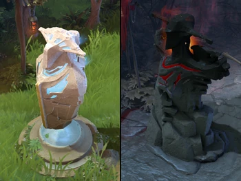
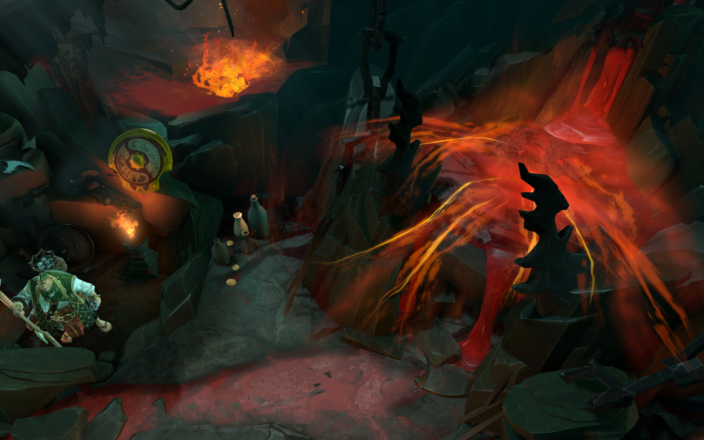
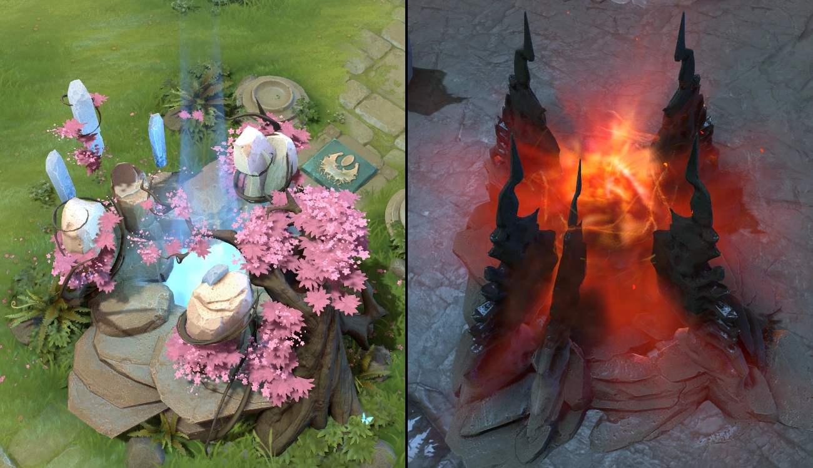
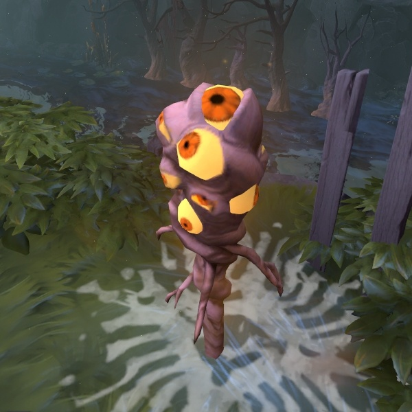
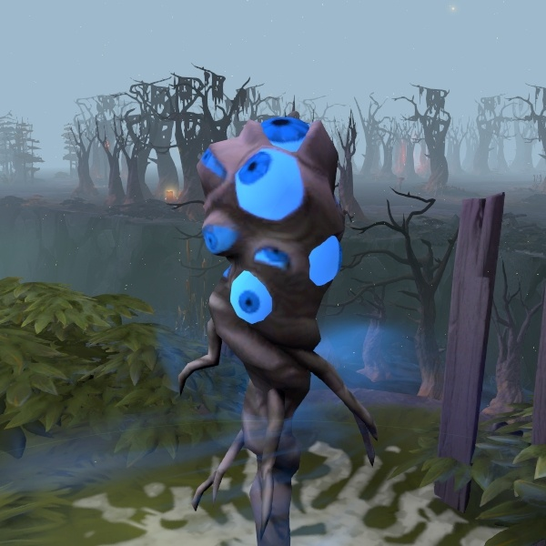
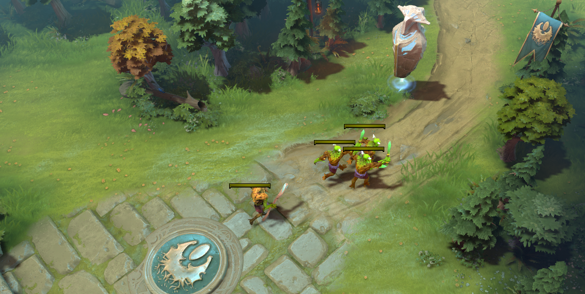
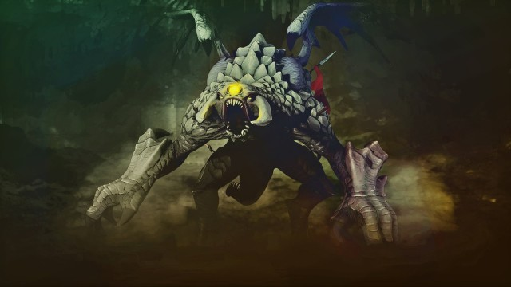

Основна інформація
Як герої поділяються на позиції?
Як герої поділяються на позиції
Carry (Керрі): Carry - це герой, який має потенціал стати найсильнішим у команді пізніше в грі. Вони зазвичай вимагають великої кількості золота та досвіду, щоб розвиватись і стати смертоносними. Carry герої часто зосереджуються на збільшенні своєї атакуючої сили та швидкості, щоб приносити великий урон ворогам у пізній грі.
Support (Сапорт): Support - це герой, який надає підтримку своїй команді в різних аспектах гри. Вони допомагають Carry-героям отримувати золото та досвід, забезпечують візуальне забезпечення на карті, ліквідують ворожі варіанти та надають цінні бафи своїм товаришам з команди.
Mid (Мідер): Mid - це герой, який грає на середині карти (Mid Lane) і зазвичай отримує більше ресурсів від крипів та героїв. Герої на цій позиції здатні швидко розвиватись і мати великий вплив на гру. Вони зазвичай мають високий потенціал урону та мобільність, щоб перемогти ворогів.
Offlane (Оффлейн): Offlane - це герой, який грає на верхній або нижній доріжці (Offlane Lane) і зазвичай має менше ресурсів порівняно з іншими героями. Герої на цій позиції часто здатні виживати проти двох або трьох ворожих гравців та завдають турботу ворогам на лінії.
Основні споруди
Башні

Башні є важливими структурами на карті гри. Вони розташовані на трьох лініях (верхній, середній та нижній) кожної команди і мають захищати територію від ворожих гравців і крипів. Башні поступово знищуються під час гри, коли ворожі гравці атакують їх. Коли башня більше не має здоров'я, вона падає, відкриваючи шлях до наступної башні або фонтана.
Фонтан

Фонтан розташований у базі кожної команди і відіграє важливу роль у відновленні здоров'я та мани гравців після битви або повернення до бази. Гравці можуть також купувати предмети у фонтані та використовувати його як безпечне пристанище.
Бараки

Кожна команда має бараки, розташовані поза базою, на кожній лінії. Бараки виступають в якості точок відправлення крипів команди, які автоматично атакують ворожих гравців та башні. Бараки також можуть атакувати ворожих гравців, що знаходяться у їх зоні дії.
Трон

Трон в грі Dota 2 - це основна ціль кожної команди, яку їм потрібно знищити для перемоги в матчі. Кожна команда має свій власний трон, розташований у базі на протилежному кінці карти. Знищення трону ворожої команди приводить до закінчення гри і перемоги.
Варди
Оглядовий вард

Наглядові варди (Observer Wards): Це тип вардів, які надають видимість на певну область карти. Вони розміщуються гравцями для контролю над ключовими місцями, наприклад, близько до важливих башень, ворожих джунглів або областей зі спрощеним видимим полем. Наглядові варди допомагають виявляти рухи ворожих гравців і допомагають команді бути більш обізнаною з ситуацією на карті.
Сторожовий вард

Сторожові варди (Sentry Wards): Сторожові варди призначені для виявлення і розблокування невидимих ворожих одиниць, таких як ворожі варди, інвізибл герої або предмети, які надають невидимість. Вони також забезпечують видимість в областях, де знаходяться ворожі варди, дозволяючи їх легше знищити. Сторожові варди використовуються для контролю над видимістю та безпекою команди.
Кріпи
Лайнові кріпи

Крипи лайній: Кожна лінія (верхня, середня, нижня) має своїх лайнових кріпів, які автоматично з'являються та переміщуються вздовж лінії. Вони атакують ворожих кріпів, будівлі та гравців, що перешкоджає їм. Головна їх роль полягає в нанесенні шкоди та знищенні башень противника. Кріпи-катапульти: Це посилені лайнові кріпи, які з'являються періодично. Вони наносять більше шкоди будівлям та мають велику витривалість. Кріпи-катапульти є цілью для захисту або атаки, оскільки вони мають потужний вплив на прогрес гри.
Лісові кріпи
.png)
Нейтральні кріпи: Лісові кріпи розташовані у спеціальних зонках лісу. Їх можна атакувати і отримати додатковий досвід, золото та предмети. Лісові кріпи розділяються на різні групи, такі як големи, гарпії, вовки, тролі та інші, кожна з яких має свої унікальні властивості та можливості. Великі кріпи: У деяких зонках лісу можна зустріти великих кріпів, які мають значно більшу витривалість та наносять більше шкоди. Вони є важливим джерелом додаткового золота та досвіду для гравців, але їх атака може бути викликом для слабо підготовлених героїв.
Рошан

Рошан (англ. "Roshan") є одним з найважливіших неігрових персонажів у грі Dota 2. Він є потужним боссом, який знаходиться в спеціальній печері, відомій як Рошанова печера.
Здоров'я та сила: Рошан має дуже велику кількість здоров'я та велику силу удару. Це робить його дуже небезпечним противником, який може швидко вбити героїв, що не підготовлені до битви.
Респаун: Рошан постійно відроджується через певний час після своєї смерті. Цей час респауну поступово збільшується з кожною його смертю протягом гри.
Нагороди: Знищення Рошана нагороджує команду, яка здійснила останній удар по ньому, Аґанім Септером, Аґанім Шардом та різноманітними арканами. Рошан також залишає за собою Ехо Золота, спеціальний предмет, який можна використовувати для збільшення золотих резервів команди..
Ефекти Аегісу: Рошан також володіє Аегісом Розради, який дає герою, що його використовує, можливість повернутися до життя після смерті. Це може бути стратегічним фактором під час командних сутичок або під час штурму бази противника.